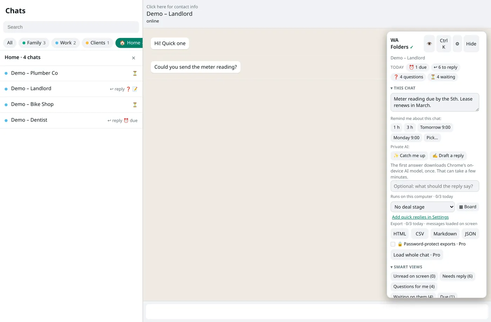

Translate WhatsApp Web messages: Portuguese, English, Spanish
Reply to a client in Portuguese when you think in English, without copying text into another tab.
Free plan with no time limit. Pro is a one-time $4.99 payment.

Translate what you read
Click Translate next to a message, or under a voice-note transcript. The translation appears under it with the language it came from. If the detected language is wrong, click change.
Translate what you write
Translate draft turns what you typed into Portuguese, English or Spanish in the message box. Undo puts your original back. WA Folders never sends it; you press Enter.
Privacy
Translation runs on your computer with Chrome's translator. Translations are shown on screen and never saved, searched or exported.
Free and Pro
Free: 20 translations a day. Pro: unlimited, one-time $4.99.
Set it up in two minutes
- Install WA Folders and open web.whatsapp.com in a recent desktop Chrome.
- Click Translate next to a message. The translation appears under it with the detected language.
- If the language is wrong, click change and pick Portuguese, English or Spanish.
- To reply in another language, type your message, click Translate draft and choose the language.
- Read the result, then press Enter yourself. Undo restores your original.
Who uses it
- Freelancers and small shops with clients in Brazil, Portugal, Spain or Latin America.
- Families split across languages, where the group chat mixes Portuguese and English.
- Anyone who reads Spanish well but writes it slowly: type in English, translate the draft, check it, send.
How it handles languages
WA Folders detects the source language and shows it next to the translation. Short messages ("ok", "sim", a name) are hard to detect, so if it guesses wrong, click change and pick the right one. It translates between Portuguese, English and Spanish only; other languages aren't offered.
Drafts: you stay in charge
Translate draft replaces the text in WhatsApp's message box with the translation. Read it before you send; machine translation can miss tone, and with clients that matters. Undo puts your original text back. WA Folders never presses Enter.
Where it runs
Translation uses Chrome's built-in translator on your computer, so no message text goes to WA Folders or a third party by default. If Chrome can't translate a particular message and you've added an OpenAI or Gemini key, WA Folders can use that key for the one message you clicked. Translations show on screen only; they aren't saved, searched or exported.
Limits
Needs a recent desktop Chrome with the built-in translator. Free includes 20 translations a day; Pro is unlimited for a one-time $4.99.
Pairs well with voice notes to text: transcribe a Portuguese voice note, then translate the transcript. Also see the guide to organizing chats into folders, for keeping international clients in one tab.
Translation vs. copying into another tab
The usual workaround is copying a message into a translator tab and pasting the answer back. That works, but it's slow, and it sends the text to whichever site you pasted into. Doing it in the chat keeps the conversation in one place, shows the source language, and keeps the text on your computer.
Free vs Pro for translation
| Free | Pro ($4.99 once) | |
|---|---|---|
| Translations per day | 20 | Unlimited |
| Translate draft | Yes | Yes |
| Languages | Portuguese, English, Spanish | Portuguese, English, Spanish |
| Runs on your computer | Yes | Yes |
Common problems
- Wrong source language: click change; very short messages are hard to detect.
- Nothing happens on click: Chrome's built-in translator needs a recent desktop Chrome; update Chrome and try again.
- Draft translation reads oddly: edit it before sending, or Undo and rephrase the original in simpler sentences.
A worked example
A client writes: "Oi! Consegue me mandar o orçamento até sexta?" Click Translate and the line underneath reads roughly "Hi! Can you send me the quote by Friday?" with Portuguese shown as the source. You type "Yes, I'll send it Thursday afternoon", click Translate draft, choose Portuguese, read the result, and press Enter.
Questions
Which languages?
Portuguese, English and Spanish.
Does it need an API key?
No, it uses Chrome's built-in translator. A key is only used as a fallback if you add one.
Is my message text sent anywhere?
Not by default. Chrome's built-in translator runs on your computer.
Can it translate group chats?
Yes. Translate works on any message in an open chat, one-to-one or group.
Are translations saved?
No. They're shown on screen only and disappear when you leave the chat.
Can I translate a voice note?
Transcribe it first, then click Translate under the transcript.
Will the other person know I used a translator?
Only if the wording gives it away. WA Folders adds nothing to the message you send.
Try it on your own chat list
Free in the Chrome Web Store. Pay once later if you want everything unlocked.